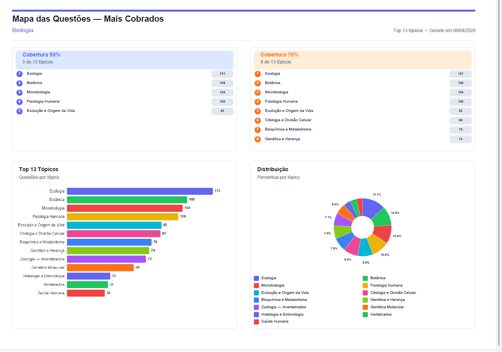
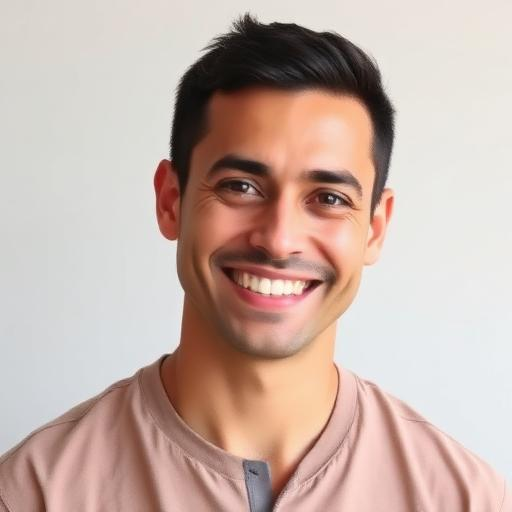
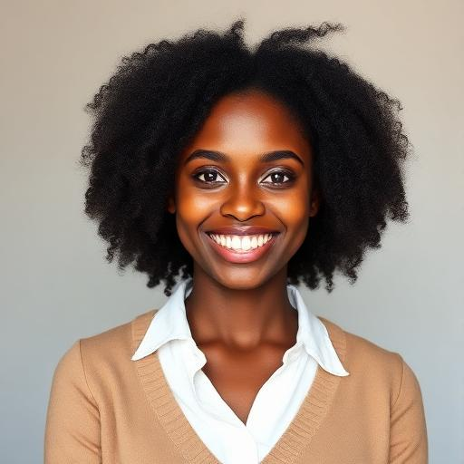
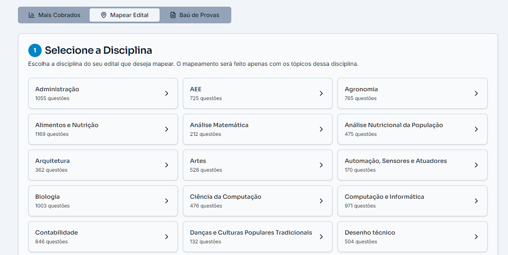

O Mapa das Questões de Conhecimentos Pedagógicos
Conhecimentos Pedagógicos cai para todas as áreas. Esse mapa mostra o que as bancas de IF já cobraram na disciplina, tópico por tópico, com a frequência de cada um. Você para de estudar no escuro:

É assim que o mapa chega para você: tópicos ordenados pelo que mais cai na prova.
Veja por dentro o material que é feito da questão para a teoria
Você acabou de receber a LDBEN completa no grupo. Agora compare: aqui está como esse mesmo conteúdo vira um material Dissecado, do jeito que a banca cobra na prova de professor de IF. E tem um pronto para a sua área também.
Por que um material Dissecado é diferente
Curso grande entrega material "100% completo": 100 páginas por tópico, feito para servir qualquer concurso. Quem tem 1 hora por dia não precisa de completo, precisa de direcionado. O material Dissecado nasce ao contrário: primeiro a gente mapeia todas as questões já cobradas para professor de IF, depois escreve só a teoria que essas questões exigem.
Teoria enxuta
20 a 30 páginas por tópico, não 100. Só o que aparece em prova de IF, organizado em blocos rápidos de ler e revisar.
Conceito-chave
Os pontos que decidem questão ficam destacados em caixas, prontos para a sua revisão de véspera.
Casca de banana
As pegadinhas que as bancas de IF repetem há anos, apontadas antes de você cair nelas.
Questões dissecadas
Depois da teoria, questões reais comentadas em 3 camadas. É aqui que a fixação acontece.
Uma questão dissecada, na prática
Exemplo com a LDBEN que você recebeu no grupo. É assim, nesse formato, para todos os tópicos e todas as áreas:
Comentário introdutório
O art. 22 da LDBEN é um dos mais cobrados em prova de IF. A banca quase sempre troca uma das três finalidades por um objetivo que parece razoável, mas não está na lei.
Alternativas dissecadas
A letra B reproduz a literalidade do art. 22. A letra A e a letra D restringem a finalidade (a lei fala em "progredir no trabalho e em estudos posteriores", não em vestibular nem só em mercado). A letra C descreve a educação profissional técnica, que é outro capítulo da lei. Casca de banana clássica: trocar finalidade da educação básica por finalidade da educação profissional.
O que eu não posso ficar sem saber
As 3 finalidades do art. 22; a diferença entre educação básica e educação profissional na LDBEN; onde a EPT (educação profissional e tecnológica) se encaixa, porque é o coração do Instituto Federal.
Quem usou o mapa aprovou
"Graças ao mapeamento, consegui focar nos tópicos certos e fui aprovada no IFS!"

"Economizei semanas de estudo. Mudou minha estratégia completamente."

"Passei no IF de primeira. O Dissecando Questões foi essencial na minha preparação."

Tem material Dissecado para a sua área
Além das disciplinas comuns a todos os editais (Legislação, Português, Conhecimentos Pedagógicos), a equipe produz material específico por área, sempre a partir das questões já cobradas para professor de IF:

Sua área não está na lista? A equipe produz o levantamento dela em até 24 horas. Já saiu material até para Engenharia de Transportes e Música, então pode pedir sem medo.
Quero o demonstrativo da minha área
Chama a Alda, nossa consultora de carreira, diz qual é a sua área (ou as suas duas áreas) e ela te envia o material demonstrativo específico, sem custo.
📲 Pedir meu material pela Alda